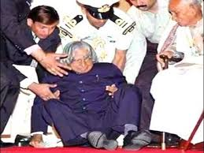

Avul Pakir Jainulabdeen Abdul Kalam ( 15 October 1931 – 27 July 2015) was an Indian aerospace scientist and politician who served as the 11th President of India from 2002 to 2007. He was born and raised in Rameswaram, Tamil Nadu and studied physics and aerospace engineering.
Early Life
Avul Pakir Jainulabdeen Abdul Kalam was born on 15 October 1931 to a Tamil Muslim family in the pilgrimage centre of Rameswaram on Pamban Island, then in the Madras Presidency and now in the State of Tamil Nadu. His father Jainulabdeen was a boat owner and imam of a local mosque, his mother Ashiamma was a housewife. His father owned a ferry that took Hindu pilgrims back and forth between Rameswaram and the now uninhabited Dhanushkodi. Kalam was the youngest of four brothers and one sister in his family.
By his early childhood, Kalam's family had become poor; at an early age, he sold newspapers to supplement his family's income.
In his school years, Kalam had average grades but was described as a bright and hardworking student who had a strong desire to learn. He spent hours on his studies, especially mathematics. After completing his education at the Schwartz Higher Secondary School, Ramanathapuram, Kalam went on to attend Saint Joseph's College, Tiruchirappalli, then affiliated with the University of Madras, from where he graduated in physics in 1954. He moved to Madras in 1955 to study aerospace engineering in Madras Institute of Technology.
Career
After graduating from the Madras Institute of Technology in 1960, Kalam joined the Aeronautical Development Establishment of the Defence Research and Development Organisation (by Press Information Bureau, Government of India) as a scientist after becoming a member of the Defence Research & Development Service (DRDS). He started his career by designing a small hovercraft, but remained unconvinced by his choice of a job at DRDO. Kalam was also part of the INCOSPAR committee working under Vikram Sarabhai, the renowned space scientist.
In 1969, Kalam was transferred to the Indian Space Research Organisation (ISRO) where he was the project director of India's first Satellite Launch Vehicle (SLV-III) which successfully deployed the Rohini satellite in near-earth orbit in July 1980; Kalam had first started work on an expandable rocket project independently at DRDO in 1965.In 1969, Kalam received the government's approval and expanded the programme to include more engineers.
Kalam was invited by Raja Ramanna to witness the country's first nuclear test Smiling Buddha as the representative of TBRL, even though he had not participated in its development. In the 1970s, Kalam also directed two projects, Project Devil and Project Valiant , which sought to develop ballistic missiles from the technology of the successful SLV programme.
Presidency
Kalam served as the 11th President of India, succeeding K. R. Narayanan. On 18 June, Kalam filed his nomination papers in the Indian Parliament, accompanied by Vajpayee and his senior Cabinet colleagues. Kalam was the third President of India to have been honoured with a Bharat Ratna, India's highest civilian honour. He was also the first scientist and the first bachelor to occupy Rashtrapati Bhawan.
Nearing the expiry of the term of the 12th President Pratibha Patil on 24 July 2012, media reports in April claimed that Kalam was likely to be nominated for his second term. After the reports, social networking sites witnessed a number of people supporting his candidature. The BJP potentially backed his nomination, saying that the party would lend their support if the Trinamool Congress, Samajwadi Party and Indian National Congress proposed him for the 2012 presidential election. A month ahead of the election, Mulayam Singh Yadav and Mamata Banerjee also expressed their support for Kalam. Days afterwards, Mulayam Singh Yadav backed out, leaving Mamata Banerjee as the solitary supporter.On 18 June 2012, Kalam declined to contest the 2012 presidential poll.
Awards
Kalam received 7 honorary doctorates from 40 universities.The Government of India honoured him with the Padma Bhushan in 1981 and the Padma Vibhushan in 1990 for his work with ISRO and DRDO and his role as a scientific advisor to the Government. In 1997, Kalam received India's highest civilian honour, the Bharat Ratna, for his contribution to the scientific research and modernisation of defence technology in India.
|
YEAR OF AWARD/HONOUR
|
NAME OF AWARD/HONOUR
|
AWARDING ORGANISATION
|
| 2014 |
Honorary professor |
Beijing University, china |
| 2009 |
Hoover Medal |
ASME Foundation, USA |
| 2008 |
Doctor of Engineering (Honoris Causa) |
Nanyang Technological University, Singapore |
| 2007 |
Honorary Doctorate of Science and Technology |
Carnegie Melton University |
| 2000 |
Ramanujan Award |
Alwars Research Centre, Chennai |
| 1997 |
Bharat Ratna |
President of India |
| 1990 |
Padma Vibhushan |
Government of India |
| 1981 |
Padma Bhushan |
Government of India |
Death

On 27 July 2015, Kalam travelled to Shillong to deliver a lecture on "Creating a Livable Planet Earth" at the Indian Institute of Management Shillong. While climbing a flight of stairs, he experienced some discomfort, but was able to enter the auditorium after a brief rest. At around 6:35 p.m. IST, only five minutes into his lecture, he collapsed. He was rushed to the nearby Bethany Hospital in a critical condition; upon arrival, he lacked a pulse or any other signs of life.Despite being placed in the intensive care unit, Kalam was confirmed dead of a sudden cardiac arrest at 7:45 p.m. IST.His last words, to his aide Srijan Pal Singh, were reportedly: "Funny guy! Are you doing well?"
Following his death, Kalam's body was airlifted in an Indian Air Force helicopter from Shillong to Guwahati, from where it was flown to New Delhi on the morning of 28 July in an air force C-130J Hercules. The flight landed at Palam Air Base that afternoon and was received by the President, the Vice-President, the Prime Minister, Chief Minister of Delhi Arvind Kejriwal, and the three service chiefs of the Indian Armed Forces, who laid wreaths on Kalam's body.[90] His body was then placed on a gun carriage draped with the Indian flag and taken to his Delhi residence at 10 Rajaji Marg; there, the public and numerous dignitaries paid homage, including former prime minister Manmohan Singh, Congress President Sonia Gandhi and Vice-President Rahul Gandhi, and Uttar Pradesh Chief Minister Akhilesh Yadav.